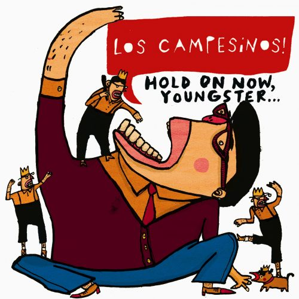
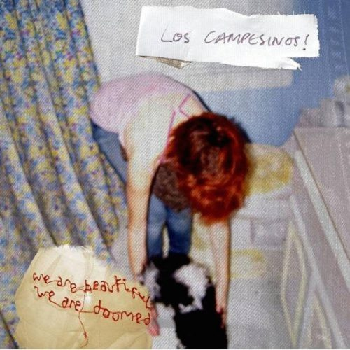
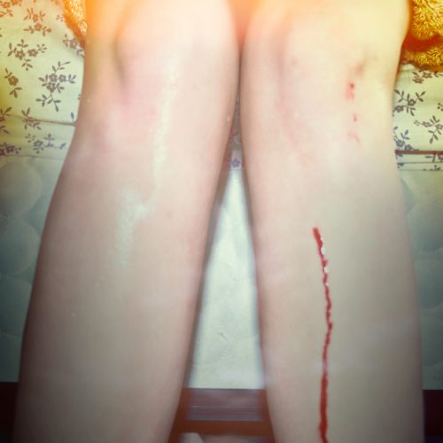
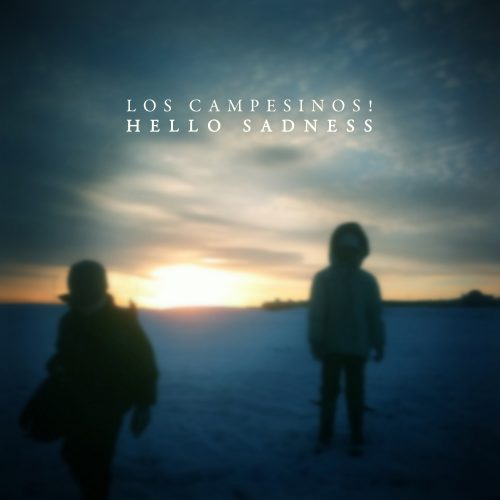
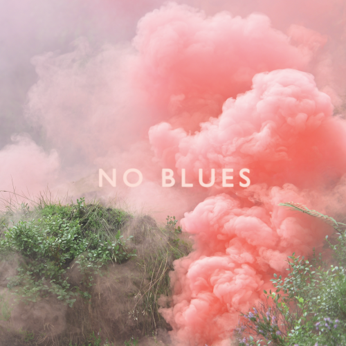
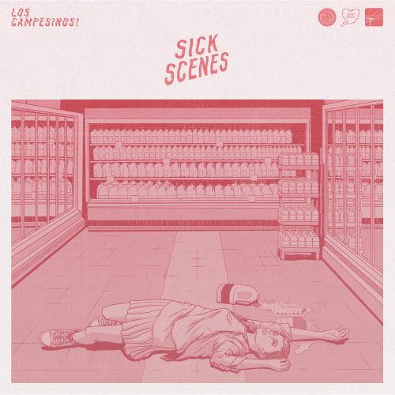
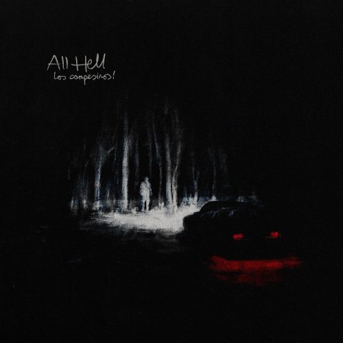

První album. Rok vydání 2008. Remaster 2018. Singly: Death to Los Campesinos!, My Year in Lists
Poslechnout
Druhé album. Rok vydání 2008. Vyšlo pár měsíců po prvním albu a má 32 minut.
Poslechnout
Třetí album. Rok vydání 2010. Dle mého názoru nejlepší album. K albu vyšla "deluxe" verze s názvem All's well that ends s akustickými remixy 4 písniček. Singly: The Sea Is a Good Place to Think of the Future, There Are Listed Buildings, Romance Is Boring
Poslechnout
Čtvrté album. Vyšlo v roce 2011. Ve stejné době píšou písničky, co později vyšly v roce 2021 jako EP Whole Damn Body. Singly: By Your Hand, Hello Sadness, Songs About Your Girlfriend
Poslechnout
Páté album. Vyšlo v roce 2013. Je celkem mid. Singly: What Death Leaves Behind, Avocado Baby
Poslechnout
Šesté album. Vyšlo v roce 2017. Má docela epické písničky. Singly: I Broke Up in Amarante, 5 Flucloxacilin, The Fall of Home, Renato Dall'Ara (2008)
Poslechnout
Sedmé album. Vyšlo v roce 2024. Kompletně vytvořené a vydané kapelou na jejich vlastní record label Heart Swells. V Británii bylo první týden v tabulkách 14. Singly: Feast of Tongues, Psychic Wound, 0898 HEARTACHE, kms
Poslechnout